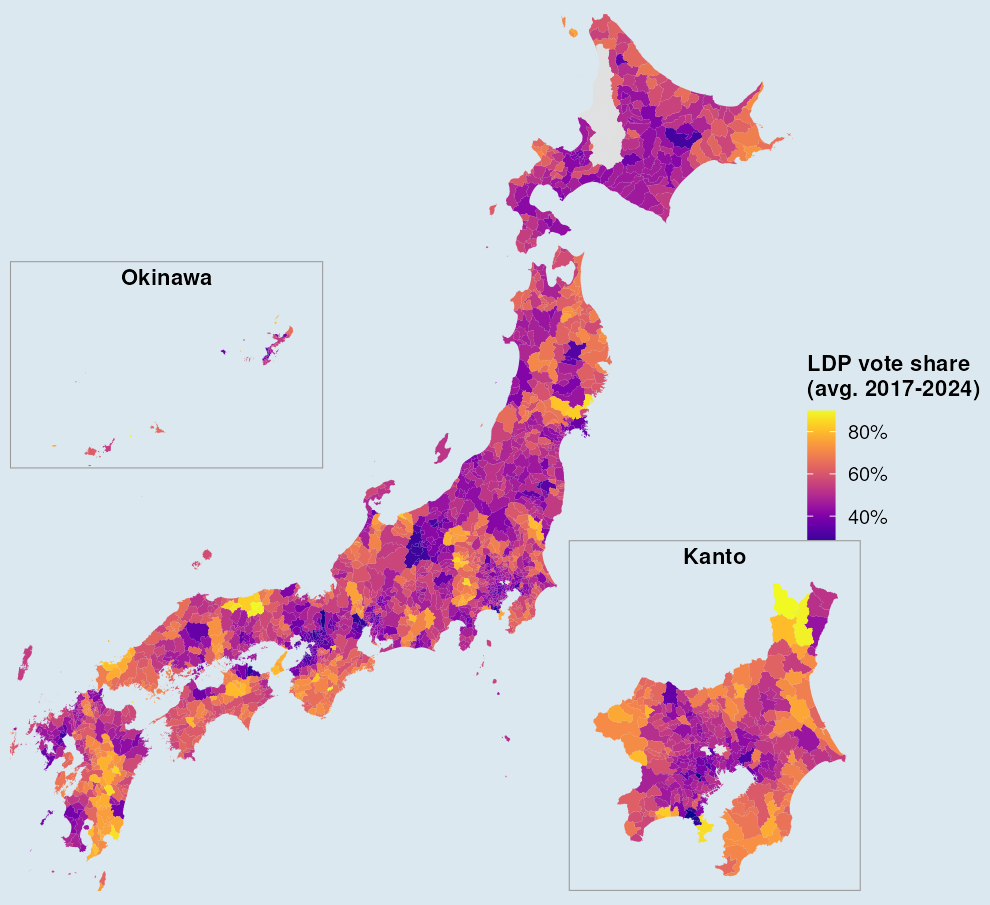
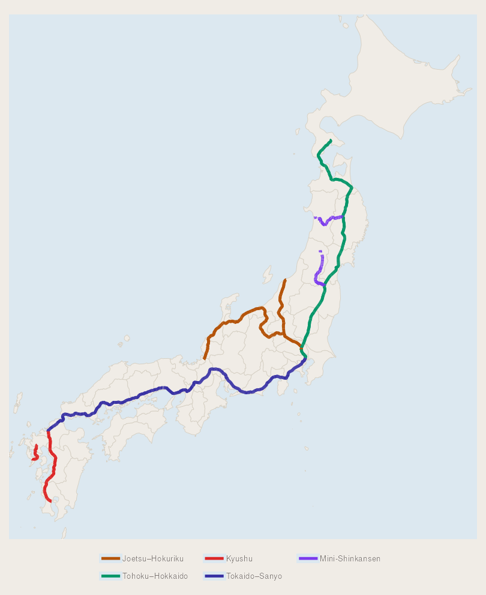

Jozef Rivest
PhD Student, Political Science & Scientific Computing
University of Michigan, Ann Arbor


Welcome! I am a Ph.D. student at the University of Michigan. My research is situated at the intersection of public opinion, comparative politics, and international relations, with a regional focus on East Asia and the Indo-Pacific. I am currently interested in public good provisions, spatial analysis, public opinion, voting behavior, bayesian analysis, and multilevel models. I currently study how infrastructure and the built environment shape political engagement. My research are anchored in Japan, but extend to South Korea, Taiwan, and Southeast Asia.
I also study research methods, with a primary focus on measurement and scaling techniques. I have published several papers on the use of AI in the social sciences, examining its accuracy in predicting and classifying political phenomena.
This is a picture of me.

Go blue!
jrivest@umich.edu
Publications
-
"Prompting the Machine: Introducing an LLM Data Extraction Method for Social Scientists"
Social Science Computer Review, 2025
doi:10.1177/08944393251344865 ↗ -
"Ain't no party like a GPT party: assessing OpenAI's GPT political alignment classification capabilities"
Journal of Information Technology & Politics, 2025, 1–13
doi:10.1080/19331681.2024.2444587 ↗